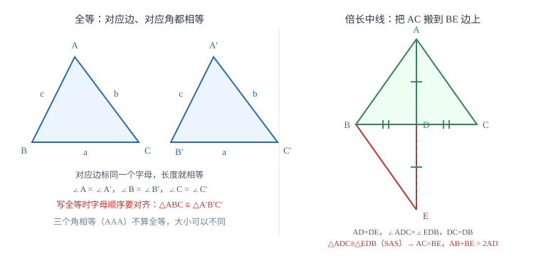

全等三角形
全等就是能完全重合：对应边相等、对应角相等。判定只要三个条件，但「边边角」不行。证明题的难点不在背判定，而在于把题目给的条件凑成某一条判定正好要的那三条。
| 所属主题 | 三角形 |
|---|---|
| 所属模块 | 几何 |
| 课标学段 | 第四学段（7~9 年级） |
| 前置知识 | 三角形的基本性质 |
| 核心素养 | 推理能力几何直观 |
教材定位
人民教育出版社《人教版（2024版）义务教育教科书·数学》
八年级上册第14章 全等三角形14.1 全等三角形及其性质14.2 三角形全等的判定
对应八上 14.1 与 14.2：性质在 14.1，SSS、SAS、ASA、AAS、HL 五种判定在 14.2。
说明
能够完全重合的两个三角形叫做全等三角形。重合的顶点叫对应顶点，重合的边叫对应边，重合的角叫对应角。全等三角形的对应边相等、对应角相等，由此还带出对应的高、中线、角平分线相等，周长与面积也相等。记两个三角形全等时，对应顶点的字母必须写在对应的位置上：\triangle ABC\cong\triangle DEF 表示 A 对 D、B 对 E、C 对 F，顺序写错就等于把条件写错了。
判定全等有五种方法：三边对应相等（SSS）、两边及其夹角对应相等（SAS）、两角及其夹边对应相等（ASA）、两角及其中一角的对边对应相等（AAS）、斜边和一条直角边对应相等（HL，只用于直角三角形）。它们的共同点是都含有「边」这个条件——三个角对应相等（AAA）只能保证形状相同、大小可以不同，所以不算全等。
使用场景
证明两条线段相等或两个角相等时，首选全等。做法是先把这两条线段（或两个角）放进两个三角形里，再为这两个三角形凑齐判定需要的三条。凑条件的常用材料有五种：公共边、公共角、对顶角、中点给出的相等线段、平行线给出的内错角或同位角。题目看起来条件不够，缺的往往就是这几样中的某一样。
遇到不可直接测量的距离，也可以用全等把它搬到能测的地方。在障碍物外选一个能同时看到两端的点，把两条视线各自延长一倍，量出延长线端点之间的距离，就等于原来那两点的距离。依据是两边及其夹角对应相等。
注意点
「边边角」不能判定全等。两条边和其中一条边的对角对应相等时，可以画出两个形状不同但都满足条件的三角形，所以结论不唯一。写证明时把 SSA 当成 SAS 是最高频的错误：SAS 的角必须是两边的夹角，不是随便一个角。
全等不是相似（相似三角形的判定与性质在 相似三角形的判定与性质 才学，这里提前借用一句话作对比）。全等要求大小也相同，相似只要求形状相同。判断时先看题目要证的是相等还是成比例：要证相等找全等，要证比例找相似，两者不能混用。
证明

图 1：全等的含义（左）与倍长中线造全等（右）。把分散的条件搬到同一个三角形里，是全等最常用的用法
证明
结论 1三条边一旦确定，三角形的形状和大小就唯一确定。
先想清楚为什么「三条边定了，三角形就定了」。给定三条线段，先固定最长的一条 BC；以 B 为圆心、c 为半径画弧，以 C 为圆心、b 为半径画弧，两条弧的交点就是 A。
关键一步关键一步是把三边条件翻译成一个点的位置条件：固定 BC 后，A 必须同时在以 B 为圆心、c 为半径的弧上、和以 C 为圆心、b 为半径的弧上——弧上每一点到圆心的距离都等于半径。三个条件一起把 A 的位置钉死，三角形自然唯一。
结论 2满足三边条件的三角形在形状和大小上唯一，所以三边对应相等可以判定全等（SSS）。
两个圆最多只有两个交点，而这两个交点关于 BC 对称，翻折过去完全重合。所以满足三边条件的三角形在形状和大小上唯一，SSS 成立。
关键一步关键一步是两个圆最多只有两个交点，且这两个交点关于 BC 对称、翻折过去完全重合——两个可能的位置其实是同一个三角形的两种摆放，形状和大小都不变，所以「唯一」成立，SSS 才敢用。
结论 3两边及其夹角对应相等可以判定全等（SAS）。
再想清楚 SAS 为什么也够。给定两边 AB、AC 和夹角 \angle A，先画角，再在两条边上分别截出 AB、AC 的长度，端点 B、C 的位置就唯一确定了，BC 随之确定，整个三角形没有活动余地。
关键一步关键一步是「夹角」这个条件把形状锁死：角一定，两条射线的方向就固定，AB、AC 的长度再把两个端点在射线上钉死，第三边 BC 随之确定。三个量定住了整个三角形，没有活动余地，所以形状和大小唯一。
结论 4两边和其中一边的对角对应相等，不能判定全等（SSA 不成立）。
最后看 SSA 为什么不够。给定 AB、AC 和 \angle B（不是夹角），以 A 为圆心、AC 为半径画弧去与射线 BX 相交，这条弧可能与射线交于两点，两个交点都能构成满足条件的三角形，而它们不全等。角的位置一换，结论就从「唯一」变成「有两种可能」。
关键一步关键差别在角的位置：SAS 给的是夹角，两条边的端点被钉死在两条定好的射线上；SSA 给的 \angle B 不夹这两条边，射线 BX 的方向还可以变，同一条弧就可能与它交于两点。交点有两个，形状和大小就不再唯一，所以 SSA 不成立。
动手实验
用三根小木条钉成一个三角形，再用四根钉一个四边形，分别推一推：三角形推不动，四边形一推就歪。这说明三条边确实锁死了三角形的形状，而四条边锁不住四边形——这正是 SSS 成立的物理版本。
解题思路
找全等三角形按四步走。第一步定目标：要证的两条线段或两个角分别属于哪两个三角形，把这两个三角形写下来。第二步数条件：题目直接给了几条边、几个角相等，一条一条标到图上。第三步补缺口：缺边就找公共边、中点、等长线段；缺角就找公共角、对顶角、平行线的内错角或同位角。第四步按顺序写：先写在哪两个三角形中，再用大括号列出三个条件，最后写结论，三个条件的顺序要与判定名称对应。
当图上找不到现成的全等时，就要添辅助线造一个出来。最典型的是倍长中线：题目给了中线，就把中线延长一倍，把两条分散的边搬进同一个三角形。判断该不该添这条线的信号是「结论里出现两边之和与中线的关系」——和差关系没办法直接用全等证，必须先造出一个三角形，让三边关系派上用场。
按场景的例题
例 1（场景：图形设计） 正方形地砖的对角线
已知 AB=AD，CB=CD，求证 \triangle ABC\cong\triangle ADC，并说明 AC 平分 \angle BAD。
解：在两个三角形中：AB=AD（已知），CB=CD（已知），AC=AC（公共边）。三条边分别对应相等，由 SSS 得 \triangle ABC\cong\triangle ADC。全等三角形对应角相等，所以 \angle BAC=\angle DAC，即 AC 平分 \angle BAD。
答：由 SSS 得全等；对应角相等，所以 AC 平分 \angle BAD。
例 2（场景：竞技与游戏） 赛场三角形区域的三边关系
在 \triangle ABC 中，AD 是 BC 边上的中线。求证：AB+AC>2AD。
解：延长 AD 到 E，使 DE=AD，连接 BE。在 \triangle ADC 与 \triangle EDB 中：AD=ED（作图），\angle ADC=\angle EDB（对顶角相等），DC=DB（D 是 BC 中点）。由 SAS 得 \triangle ADC\cong\triangle EDB，所以 AC=EB。在 \triangle ABE 中，由三边关系得 AB+BE>AE，即 AB+AC>2AD。
答：倍长中线后 AC 被搬到 BE，再用三角形三边关系即可。
例 3（场景：测量与工程） 隔池塘测两点距离
要测池塘两端 A、B 的距离，但两点之间无法直接到达。在池塘外取一点 C，延长 AC 到 D 使 CD=CA，延长 BC 到 E 使 CE=CB，量得 DE=48 米。求 AB，并说明依据。
解：在 \triangle ABC 与 \triangle DEC 中：CA=CD（作图），CB=CE（作图），\angle ACB=\angle DCE（对顶角相等）。由 SAS 得 \triangle ABC\cong\triangle DEC，所以 AB=DE=48 米。这里能测的是 DE，无法直接测的是 AB，全等把「测不到」换成了「测得到」。
答：AB=48 米，依据是两边及其夹角对应相等。
常用推论
全等三角形的对应高、对应中线、对应角平分线都相等，周长与面积也相等。做题时可以放心把这些量当成已知来用。
证明「两线段相等」的标准路径是：找到含这两条线段的两个三角形 → 证全等 → 由对应边相等得结论。角相等同理。
如果两个三角形有两边和一角相等，只有当这个角是两边的夹角时才能判定全等；否则条件不足，需要另找条件补成 SAS 或改用其他判定。
易错点
错已知 AB=DE，AC=DF，\angle B=\angle E，就写「由 SAS 得 \triangle ABC\cong\triangle DEF」。
为什么错\angle B 是 AB 与 BC 的夹角，不是 AB 与 AC 的夹角。这三条条件是边边角，不能判定全等。
正确要让 SAS 成立，角必须是两边的夹角，例如 \angle A=\angle D；否则需再补一条边或一个角，改用 SSS 或 AAS。
错已知对应关系是 A 对 D、B 对 F、C 对 E，习惯性按字母顺序写成 \triangle ABC\cong\triangle DEF。
为什么错全等记号里的字母顺序就是对应关系。写成 \triangle DEF 等于声称 B 对 E、C 对 F，与事实不符；后面据此写出的对应边、对应角等式会全部错位。
正确按对应顶点顺序写：\triangle ABC\cong\triangle DFE。写完回读一遍：A 的位置上是 D，B 的位置上是 F，C 的位置上是 E。
错证明过程中用到公共边 AC=AC，但列条件时漏写这一条。
为什么错判定需要的三条必须全部写出。公共边虽然图上明摆着，不写就等于少一个条件，推理链断了。
正确把公共边、公共角、对顶角都当作正式条件写进大括号里。
直观理解
全等像复印：原件和复印件叠在一起，每个角每条边都对得上。相似像缩放：形状一样，大小可以变（相似后面才学，先留个印象）。倍长中线像把一条边「搬家公司」搬到对面去——它原本在三角形外面，搬完之后和另一条边住进同一个三角形，三边关系才有机会发挥作用。